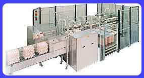

через пикообразный накопитель, или специальный
погрузчик, или сочетанием накопителя с погрузчиком
через пикообразный накопитель, или специальный
погрузчик, или сочетанием накопителя с погрузчиком
через пикообразный накопитель, или специальный
погрузчик, или сочетанием накопителя с погрузчиком
Запатентованная система овоскопирования
+
+
+
Самозагружающиеся ячейки для взвешивания яиц с высокой
точностью и автоматической установкой на ноль
+
+
+
Количество автоматических упаковочных линий
6
8
8-12
Максимальная мощность каждого упаковщика
50 коробок (18,000 яиц)
60 коробок (21 600 яиц) в час
85 коробок (30 600 яиц) в час
Возможность установки в машину разгрузчиков тары, упаковщиков
и устройств для закрывания любого вида прокладок
+
+
+
Возможность использования компьютера для
установок программ сортировки, изменения весовых категорий, восстановление
данных, и т.д. (Компьютерная программа на русском языке)
+
+
+
Возможность установки системы струйной
маркировки яиц с нанесением названия и логотипа предприятия, штамповки
и наклеивания этикеток на прокладки.
+
+
+
Наличие как правосторонних,так и левосторонних моделей
+
+
+
Серия сортировочно-упаковочных машин ARDENTA:
Серия оборудована такими устройствами
Система с оптимальным использованием производительности сортировщиков
Высоко-технологическая полуавтоматическая система выбраковки с возможностью
установки (по желанию) автоматической системы обнаружения трещин и грязи
Поддержание гигиенических стандартов на протяжении сортировочного процесса
Динамическая система взвешивания с автоматической установкой на ноль
Запатентованная уникальная система контроля
Совершенная укладка яйца в лотки
Прецизионное управление производственным процессом
Кодирование и отслеживаемость
Удобная для обслуживания конструкция из нержавеющей стали
Технические характеристики:
Производительность:
54.000 яиц/час
70.000-100.000 яиц/час (195-280 коробок/час).
Система загрузки:
1. С пикового накопителя;
2. С погрузчика;
3. Смешанная - с пикового накопителя и с погрузчика (In/Off line версия)
+
+
+
+
+
+
Загрузочный стол
6-ти рядный, из нержавеющей стали
12-ти рядный, из нержавеющей стали
Система выбраковки: Одновременно снабжена антибликовыми
лампами рассеянного света; полуавтоматической системой обнаружения дефектов
- IRUS и автоматической системой обнаружения трещин (по желанию).
+
+ автоматической системой обнаружения грязи (по желанию)
Система взвешивания: Динамическая, при прохождении
яйца через ячейку-датчик, что дает высокую точность взвешивания.
+
+
Сортировка С одиночной беспрерывной цепью яиц и
металлической решеткой из нержавеющей стали
+
+ рамкой из нержавеющей стали
Маркировка яиц
Маркировочный принтер с 1 печатающей головкой
Маркировочный принтер с 2 печатающими головками
Число упаковочных линий
8-14 (каждая макс. по 85 коробок / час)
8-14 (каждая макс. по 85 коробок / час)
Система контроля: Через процессор ПК по сети CAN-network
c прецизионным программным обеспечением, также управляющим струйной
маркировкой и скоростью конвейера.
+
+
Управление производственным процессом:
дисплей на передней и задней сторонах над каждой линией с индикацией
сортировки и информацией о текущем процессе.
+
+
Яйцесортировочные машины фирмы Staalkat со столом с ручной
упаковкой
Производительность машин составляет 9.000 яиц в час (INTER COMPACTA) И
14.000 яиц в час (ULTRA COMPACTA). Каждая из установок обладает высоким
соотношением производительности на оператора и требует небольшой производственной
площади для достижения максимальной эффективности. Компактные сортировальные
машины Staalkat сконструированы так, чтобы максимально упростить их обслуживание.
Сделаны из нержавеющей стали
Ultra Compacta
Обслуживающий персонал 4-5 человек
Сортировка/взвешивание механическая система взвешивания
Количество сортировочных линий 4-8
Электропитание 220 В, одна фаза, 50 Гц. (иные варианты по заказу)
Потребляемая мощность 0,55 Квт/час
Размеры 2,45х4,80=11,76 кв.м. (без пикового накопителя)
Дополнительное оборудование
автоматический пиковый накопитель с возвратным транспортером
ручной полуавтоматический подъемник с вакуумным захватом,
подающий одновременно 6х5 яиц на загрузочный стол
ротационный загрузчик, подающий одновременно 30 яиц
на загрузочный стол
система овоскопирования
устройство маркировки
общий счетчик яиц
Inter Compacta
Сортировка/взвешивание механическая система взвешивания
Обслуживающий персонал 3-4 человека
Количество сортировочных линий 4-7
Электропитание 220 В, одна фаза, 50 Гц. (иные варианты по заказу)
Потребляемая мощность 0,25 Квт/час
Размеры 2,34х2.36=5,52 кв.м. (без пикового накопителя)
Дополнительное оборудование
автоматический пиковый накопитель с возвратным транспортером
ручной полуавтоматический подъемник с вакуумным захватом,
подающий одновременно 3х5 яиц на загрузочный стол
система овоскопирования
устройство маркировки
общий счетчик яиц
FRG20
Разгрузчик для 6,12 и 18-рядных загрузочных стволов:

Яйцезагрузочная система используется:
Для разгрузки яиц на сложенные подносы
Для разгрузки яиц через пиковый накопитель прямо на лотки в комбинации
с загрузкой на сложенные подносы, так называемая in/off-line - версия
Эти возможности обеспечивают эффективную разгрузку яиц на сортировщик,
для 6, 12 и 18 -рядных версий загрузчика. загрузчик может работать практически
с любыми типами лотков. Низкий уровень шума и корпус из нержавеющей стали
гарантирует профессиональную подготовку яиц к сортировке. Запатентованная
система контроля позволяет мгновенно выявить ошибку в процессе на дисплее
и тут же устранить её. Старт-стопный механизм эксплуатации делает износ
погрузчика минимальным.
Возможности электронных детекторов разгрузчика:
Обнаружение разгрузки на ствол
При правильном положении ствола детектор автоматически включается,
при отклонениях подается сигнал на дисплей, затем процессор останавливает
загрузочную линию и загрузчик продолжает работать как обычно, без простоя.
Обнаружение пустых лотков
После обнаружения пустых, неполных лотков или лотков с побитыми яйцами
электронными датчиками, эти лотки направляются на отдельную линию, что
также важно при их повторном использовании.
Дополнительная информация - в Харькове по тел. (057) 757-23-93;
факс +38(057) 719-91-44; e-mail: ekstukraine@ukr.net
Телефоны представительств в других городах здесь:
Машины для
сортировки и упаковки яиц компании STAALKAT отличаются высокой надежностью,
легкостью в эксплуатации, высокой окупаемостью.
Они отлично показали себя в работе не только в Европе и Азии (Франция,
Германия, Япония), но и на просторах СНГ.
С февраля 2005 года открылось официальное представительствл Staalkat
на Украине - НПП "КИАТОН".